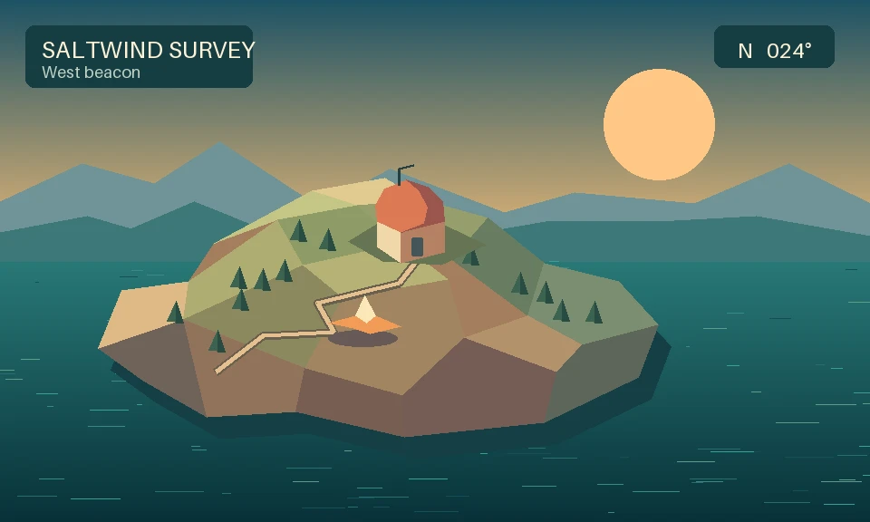
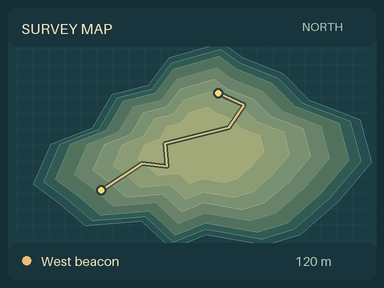

Cara
Cara
Nintendo 3DS emulator
Cara is a new Fast, Accurate, Portable Emulation core for the Nintendo 3DS.


Get Cara
- macOS Signed download pending
- iPhone and iPad Public TestFlight invite pending
- Android Experimental ARM64 build, debug-signed Download APK
Software preservation
Cara exists to preserve the legacy of Nintendo games and help players revisit the experience as faithfully as possible. Cara includes no Nintendo code or game assets. We do not support piracy.
Project history
Cara builds on Citra and Citra MMJ and uses Azahar’s FastInterp. The emulator and app source are available under GPL-2.0-or-later.
Made with Codex and heavily engineered by AI.
Human Guided Discovery.
Cara’s OpenGL renderer is tuned for the hardware it runs on. On Android, compatibility varies by device, including across Mali and Adreno GPUs. Hardware notes